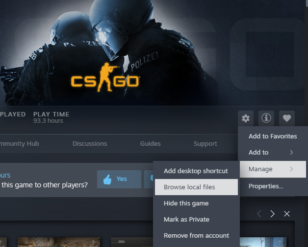
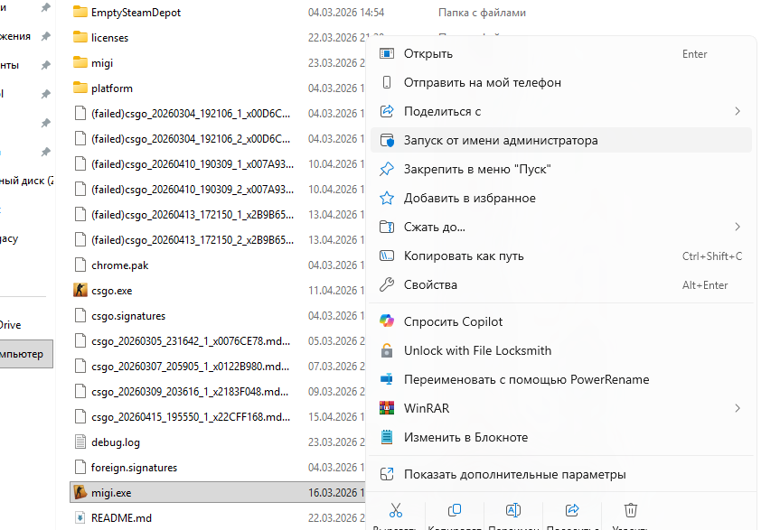
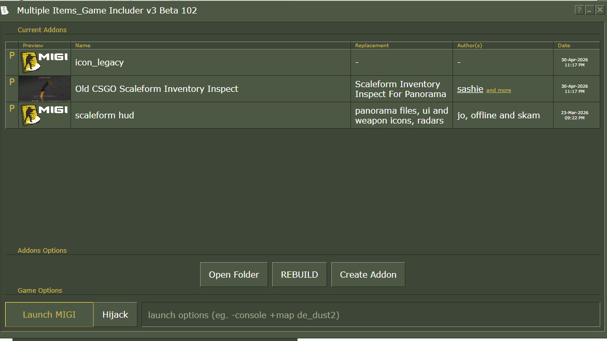
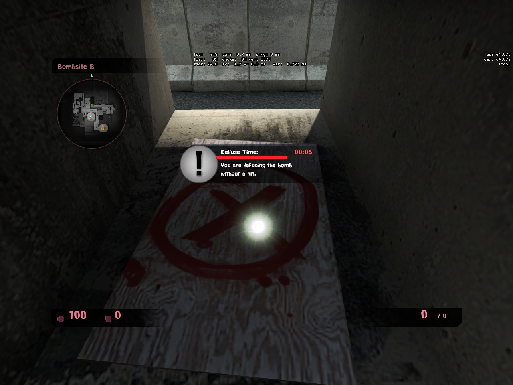
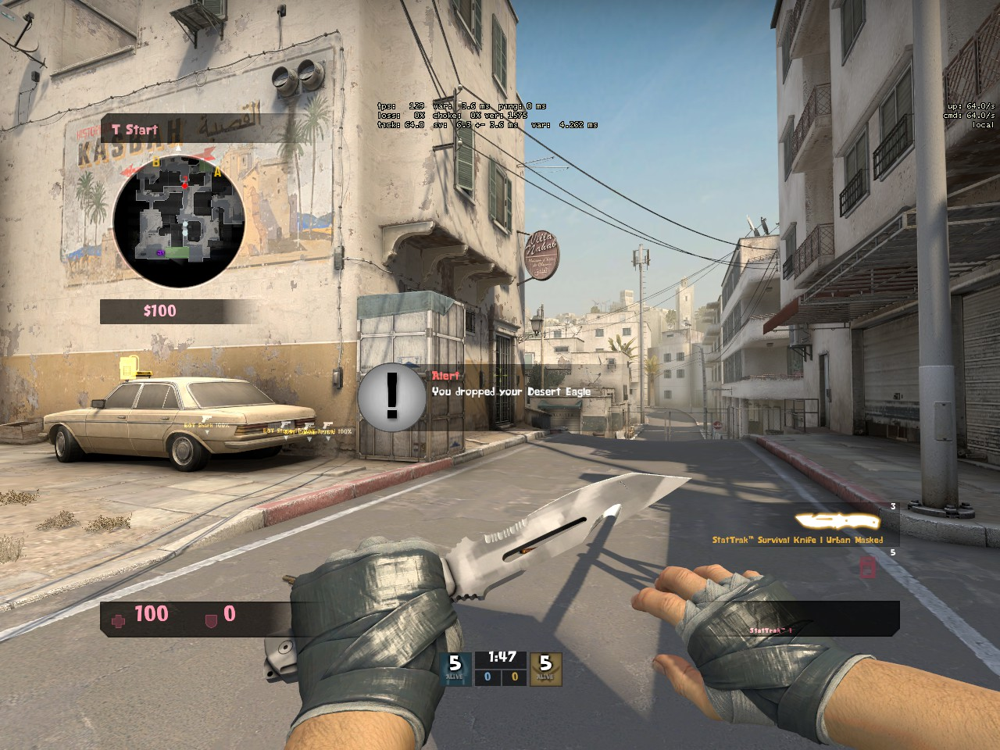
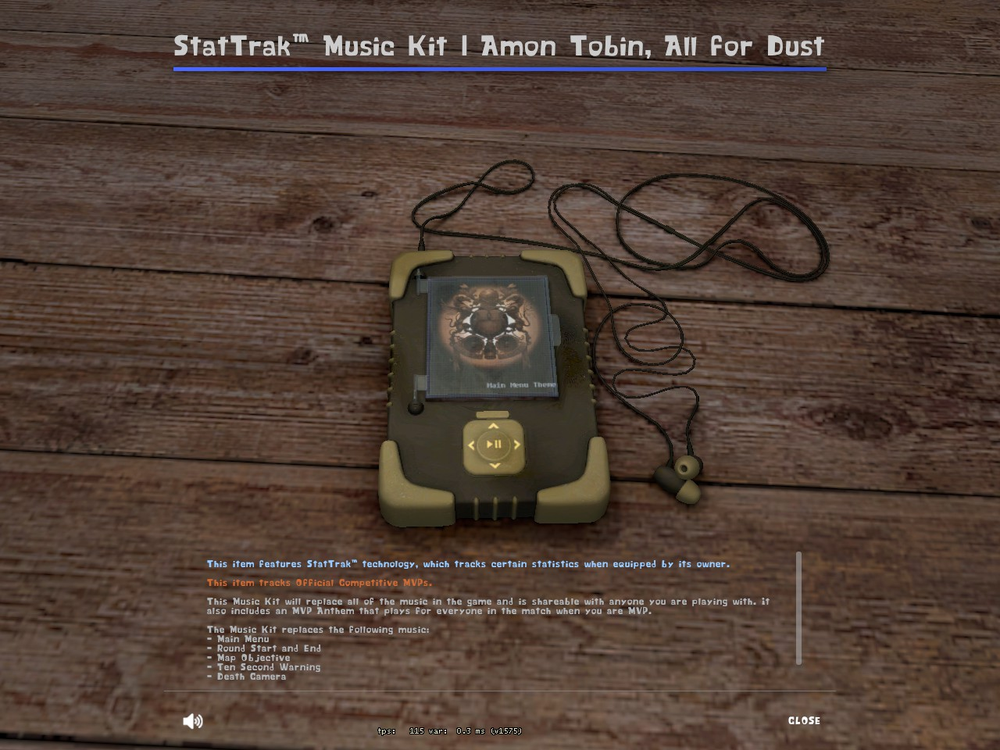

↓ Скролль вниз ↓
01. Ядро
Распакуй скачанный архив.
Перенеси все файлы напрямую в папку migi/csgo. Структура файлов должна быть как на правом скриншоте. Если Windows спросит про замену — смело жми «Да». Мы здесь, чтобы ломать новое и строить старое.



02. Сборка MIGI
Если запустишь без прав Администратора — магия не сработает.
Открывай MIGI. Обязательно от имени Админа. Жми жирную кнопку Build MIGI и жди, пока программа переварит патчи интерфейса.


03. Параметры
Чтобы игра забыла про современный UI, нужно дать ей правильную команду.
Открой свойства CS:GO в Steam и пропиши эти параметры запуска:
-game migi/csgo -language english


Результат (Скролль вправо →)




